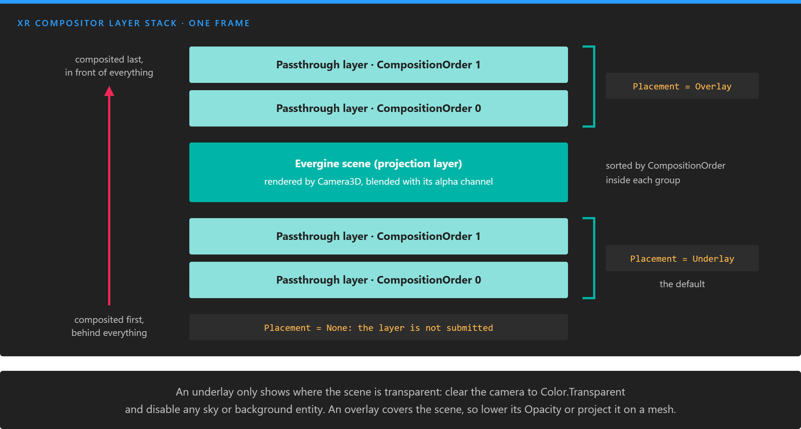
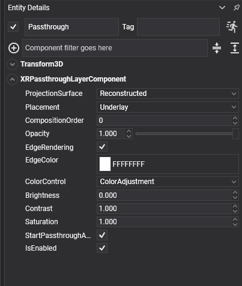
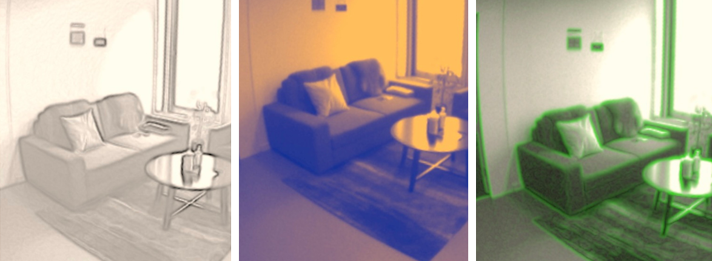

Passthrough
Passthrough shows the user's real surroundings inside the headset, reconstructed from the headset's cameras in real time. Mixing it with the scene turns a VR application into a mixed reality one: virtual objects on a real desk, a window into the room from inside a virtual world, or a stylized outline of the walls so the user does not walk into them.
In Evergine you add passthrough with one component, XRPassthroughLayerComponent, and style it with its properties.
Supported devices
| Device | Platform | Requirement |
|---|---|---|
| Meta Quest headsets | OpenXR | The XR_FB_passthrough extension and the passthrough feature in the Android manifest |
On any other platform or device, XRPlatform.Passthrough is null and the component does nothing. Android XR shows the real world through the AlphaBlend environment blend mode instead of passthrough layers.
How it works
Your application never receives the camera images. It submits a passthrough layer, a placeholder, and the XR compositor fills it with the camera feed when it assembles the final image. What you control is where that layer sits relative to the scene and how it looks:
- Composition: the layer goes behind the scene (underlay) or in front of it (overlay), and several layers are ordered by
CompositionOrder. - Projection surface: the feed is projected either on the room as the runtime reconstructs it, or only on meshes you provide.
- Style: opacity, edge highlighting, and color adjustments or color maps.

The compositor draws the stack from the bottom up, every frame. Underlays sort below the scene and overlays above it; inside each group, a larger CompositionOrder is drawn later, in front.
Enable passthrough in a Meta Quest project
The Meta Quest template ships with passthrough disabled. Enable it in the launcher project:
In
MainActivity.cs, uncomment the passthrough extensions in theOpenXRPlatformconstructor.XR_FB_triangle_meshis only needed to project passthrough on a mesh:"XR_FB_passthrough", // Enable Passthrough in Meta Quest devices "XR_FB_triangle_mesh", // Allow to project Passthrough on MeshesIn
AndroidManifest.xml, uncomment the passthrough feature:<uses-feature android:name="com.oculus.feature.PASSTHROUGH" android:required="true" />
Keep the headset's operating system up to date: passthrough capabilities, such as color passthrough, depend on it.
XRPassthroughLayerComponent
Add an XRPassthroughLayerComponent to any entity to create a passthrough layer. It needs no other component.

The layer is created when the component attaches and starts when it activates. Disabling the component or its entity pauses the layer, and removing it destroys the layer.
Layer properties
| Property | Default | Description |
|---|---|---|
| ProjectionSurface | Reconstructed |
Reconstructed projects the feed on the room as the runtime reconstructs it, which is what you want when you know nothing about the room. UserDefined shows the feed only on the meshes you register, and leaves the rest of the layer transparent. |
| Placement | Underlay |
Underlay puts the layer behind the scene, Overlay in front of it. None keeps the layer out of the composition. |
| CompositionOrder | 0 | Order among layers with the same placement. A larger value is drawn in front of a smaller one. |
| StartPassthroughAutomatically | true |
Starts the layer when the component activates. Set it to false to start it yourself. |
| IsRunning | Read-only | Whether the layer is currently showing the feed. false when there is no layer. |
| PassthroughLayer | Read-only | The underlying XRPassthroughLayer. null when the platform has no passthrough. Use it to call StartPassthrough() and PausePassthrough(). |
A reconstructed layer: the whole room, projected on the geometry the runtime estimates.
Important
An underlay is only visible where the scene is transparent. Set the camera's BackgroundColor to Color.Transparent and disable or remove anything that fills the background, such as a sky atmosphere or a skybox. Otherwise the scene covers the passthrough completely.
Create a passthrough background from code
using Evergine.Common.Graphics;
using Evergine.Components.XR;
using Evergine.Framework;
using Evergine.Framework.Graphics;
using Evergine.Framework.XR.Passthrough;
public class MixedRealityScene : Scene
{
protected override void CreateScene()
{
base.CreateScene();
// The passthrough underlay is only visible where the scene is transparent.
var camera = new Entity("Camera")
.AddComponent(new Transform3D())
.AddComponent(new Camera3D() { BackgroundColor = Color.Transparent });
var passthrough = new Entity("Passthrough")
.AddComponent(new XRPassthroughLayerComponent()
{
Placement = XROverlayType.Underlay,
EdgeRendering = true,
EdgeColor = Color.Cyan,
});
this.Managers.EntityManager.Add(camera);
this.Managers.EntityManager.Add(passthrough);
}
}
Project passthrough on a mesh
With a user-defined surface, the feed only appears on meshes you choose. This is steadier than the reconstruction when you already know the geometry, and it lets you cut windows into a virtual world.
- Enable
XR_FB_triangle_meshinMainActivity.cs. - Add
XRPassthroughLayerComponentto an entity that has a mesh component (for examplePlaneMesh, or a model's meshes). - Add
XRPassthroughSurfaceMeshComponentto the same entity. It registers the entity's meshes as projection surfaces, follows the entity's transform, and switches the layer'sProjectionSurfacetoUserDefined.
using Evergine.Components.Graphics3D;
using Evergine.Components.XR;
using Evergine.Framework;
using Evergine.Framework.Graphics;
using Evergine.Framework.XR.Passthrough;
using Evergine.Mathematics;
public class PassthroughWindowScene : Scene
{
protected override void CreateScene()
{
base.CreateScene();
// A 1 x 1 m window to the real room, two metres in front of the start position.
// The plane has no MeshRenderer: its mesh is only the projection surface.
var window = new Entity("PassthroughWindow")
.AddComponent(new Transform3D() { Position = new Vector3(0, 1.5f, -2) })
.AddComponent(new PlaneMesh() { PlaneNormal = PlaneMesh.NormalAxis.ZPositive, Width = 1, Height = 1 })
.AddComponent(new XRPassthroughLayerComponent() { Placement = XROverlayType.Overlay })
.AddComponent(new XRPassthroughSurfaceMeshComponent());
this.Managers.EntityManager.Add(window);
}
}
A user-defined layer: the feed only appears on the registered mesh.
XRPassthroughSurfaceMeshComponent can also feed a layer on another entity:
| Property | Default | Description |
|---|---|---|
| SearchPassthroughLayer | OwnerEntity |
Where to find the layer: OwnerEntity uses the XRPassthroughLayerComponent of the same entity, Scene the one at PassthroughLayerEntityPath. |
| PassthroughLayerEntityPath | null |
Entity path of the layer entity, when SearchPassthroughLayer is Scene. Several surface entities can share one layer this way. |
Note
Projection on meshes needs both XR_FB_passthrough and XR_FB_triangle_mesh. Without them XRPassthroughSurfaceMeshComponent does not attach.
Style properties
These properties change how the feed looks. They apply to the layer immediately, also while it runs.

| Property | Default | Description |
|---|---|---|
| Opacity | 1 | Opacity of the passthrough image, clamped to [0, 1]. Edges drawn by EdgeRendering are not affected. |
| EdgeRendering | false |
Detects edges in the camera image and draws them over it. |
| EdgeColor | Color.White |
Color of the edges. Only shown in Evergine Studio when EdgeRendering is on. |
| ColorControl | None |
How the colors of the image are modified: None, ColorAdjustment, ColorMap or GrayscaleMap. Each mode uses the properties described below. |
Edge rendering over the camera image.
ColorAdjustment
Adjusts brightness, contrast and saturation. Saturation only has an effect on devices with color passthrough.
| Property | Default | Description |
|---|---|---|
| Brightness | 0 | Brightness offset in the range [-100, 100]. 0 leaves the image unchanged. |
| Contrast | 1 | Contrast factor, 0 or greater. 1 leaves the image unchanged. |
| Saturation | 1 | Saturation factor, 0 or greater. 1 leaves the image unchanged. |
ColorMap
Converts the image to grayscale and replaces each luminance value with a color from a curve.
| Property | Default | Description |
|---|---|---|
| ColorMapMonoToRGBA | null |
A ColorCurve with keys between 0 (black) and 1 (white). |
using Evergine.Common.Curves;
using Evergine.Common.Graphics;
using Evergine.Framework.XR.Passthrough;
// Map dark areas to blue, mid tones to green and red, highlights to yellow and white.
var colorMap = new ColorCurve();
colorMap.Keyframes.Clear();
colorMap.AddKey(0, Color.Black);
colorMap.AddKey(0.1f, Color.Blue);
colorMap.AddKey(0.4f, Color.Green);
colorMap.AddKey(0.6f, Color.Red);
colorMap.AddKey(0.8f, Color.Yellow);
colorMap.AddKey(1, Color.White);
passthroughLayer.ColorControl = XRPassthroughColorControlType.ColorMap;
passthroughLayer.ColorMapMonoToRGBA = colorMap;
The color map above applied to the room.
GrayscaleMap
Converts the image to grayscale and remaps each luminance value through a curve.
| Property | Default | Description |
|---|---|---|
| ColorMapMonoToMono | null |
A FloatCurve with keys between 0 and 1, and values between 0 and 1. |
using Evergine.Common.Curves;
using Evergine.Framework.XR.Passthrough;
// Invert the grayscale image.
var monoMap = new FloatCurve();
monoMap.Keyframes.Clear();
monoMap.AddKey(0, 1);
monoMap.AddKey(1, 0);
passthroughLayer.ColorControl = XRPassthroughColorControlType.GrayscaleMap;
passthroughLayer.ColorMapMonoToMono = monoMap;
The inverted grayscale map.
In both examples, passthroughLayer is the XRPassthroughLayerComponent, for example obtained with [BindComponent] in a behavior on the same entity.
Pause and resume passthrough
A layer shows the feed while its component is active. To stop the feed without removing the component, call PausePassthrough() on the layer, and StartPassthrough() to resume it. XRPlatform.Passthrough has the same two methods, which act on the passthrough as a whole.
using Evergine.Components.XR;
using Evergine.Framework;
public class PassthroughToggle : Component
{
[BindComponent]
private XRPassthroughLayerComponent layer = null;
// Call it from a button or a controller input.
public void Toggle()
{
if (this.layer.IsRunning)
{
this.layer.PassthroughLayer?.PausePassthrough();
}
else
{
this.layer.PassthroughLayer?.StartPassthrough();
}
}
}